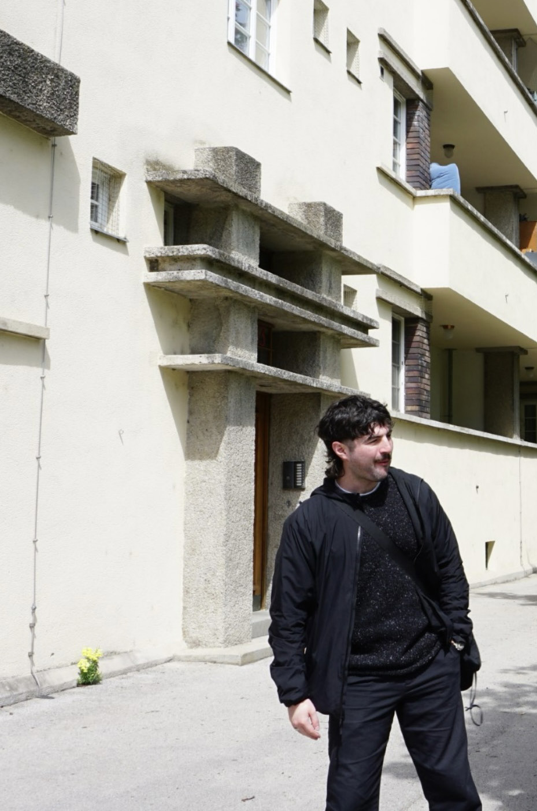

Selected Work


A practice rooted in the dialogue between material, space, and place. Based in Dublin, working internationally.
An architecture student and emerging practitioner with a sustained interest in the relationship between landscape, material, and building. Trained at TU Dublin across undergraduate and postgraduate study, the work moves between careful building analysis and territorial-scale design research — asking how buildings are made, from what materials, and within what systems of production.
Professional experience includes architectural production work with Ailtireacht and collaborative research and exhibition work with CoLab81-7, investigating the legacy of institutions of incarceration across Ireland. The work consistently engages with questions of resource, reuse, and building culture. Based in Dublin.

